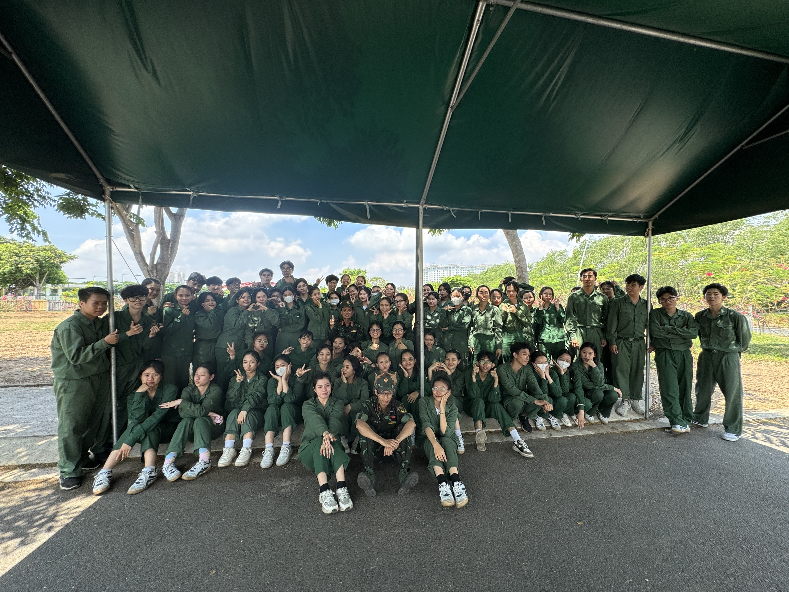
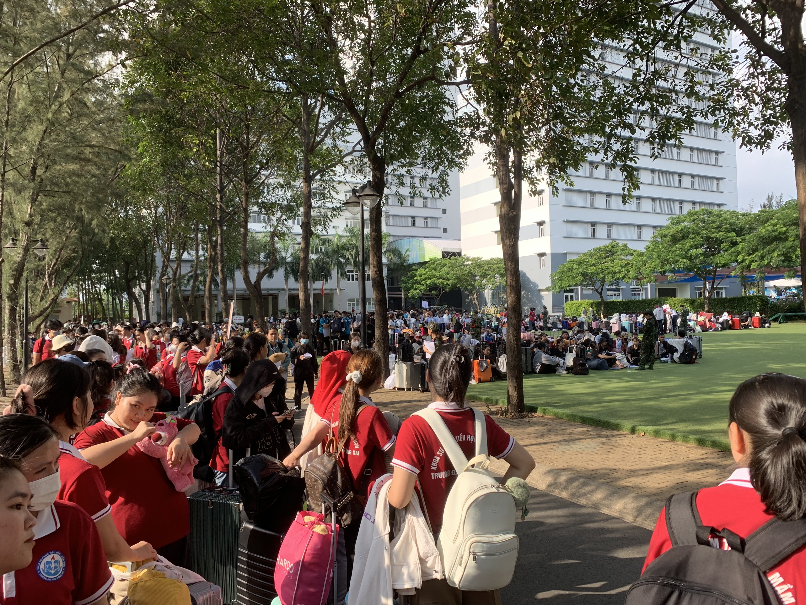
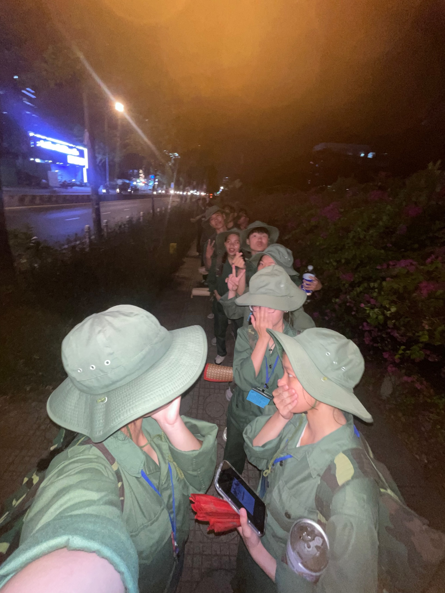

Cuộc gặp gỡ của chúng ta là khởi đầu
Cho một hành trình gian nan và vất vả
Nhưng chứa đầy những kỉ niệm khó quên. C16
- 
Một chặng đường dài chúng ta đã trải qua cùng nhau
-

Buổi sáng đầu tiên có mặt tại trường Tôn Đức Thắng nè, lần đầu tiên thầy một ngôi trường đẹp vậy luôn á
Ngày 25 tháng 03 năm 2024 -
5h sáng tập thể dục mà cả đại đội dậy lúc 4h30 để chuẩn bị tập thể dục, TTD để rèn luyện thân thể
Ngày 26 tháng 03 năm 2024 -

Đây là dần quen với cuộc sống quân sự rồi nè, xếp hàng ăn cơm cũng phải lưu lại khoảnh khắc xinh đẹp này
Ngày 27 tháng 03 năm 2024 -
Buổi tối còn được đi xem phim về chiến tranh nè, thật ý nghĩa nhờ đó mà tụi mình biết được ông cha ta đã anh dũng như thế nào
Ngày 29 tháng 03 năm 2024 -
Nghịch ngợm bị thầy Quang bắt, sợ bị lập biên bản lắm
Ngày 01 tháng 04 năm 2024 -
Những hôm bị phạt gác ra ngoài thao trường ngủ bù
Ngày 03 tháng 04 năm 2024 -
Thi kết thúc HP1 cũng là tạm biệt 2 chị đẹp thân yêu
Ngày 07 tháng 04 năm 2024 -

Xếp hàng ngay ngắn đợi lấy vũ khí nè, lấy xong mỗi người 2 tay 2 súng đi ra ngoài khu 3 học tập
Ngày 09 tháng 04 năm 2024 -
Buổi học cuối cùng được người thầy đáng yêu dạy dỗ
Ngày 10 tháng 04 năm 2024 -

Lần đầu tiên trải nghiệm hành quân rèn luyện, tuy mệt nhưng rất vui
Ngày 02 tháng 04 năm 2024 -
Những bộ quần áo đẹp nhất chính là bộ quần áo khoác màu xanh khoác lên mình người lính.
Ngày 19 tháng 04 năm 2024 -
Đêm diễn văn nghệ rất vui khi nhận được giải 3, còn hội thao bóng đá thì giải nhất
Ngày 19 tháng 04 năm 20xx -
Lần đầu tiên xem phim cùng nhau, lần đầu tiên nắm tay nhau, hai bữa ăn đầu tiên, buổi hẹn hò đầu tiên.
Ngày 01 tháng 01 năm 2024